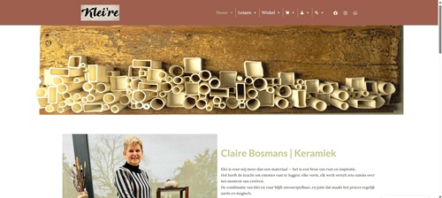

Een eenvoudige, gebruiksvriendelijke webshop voor kunstenaar Claire Bosmans (Klei’ re)
Kleire.be is de persoonlijke e-commerce website voor keramiek-kunstenares Claire Bosmans (“Klei’ re”). Het hoofddoel is het tonen en rechtstreeks verkopen van handgemaakte keramische objecten (vaasjes, kopjes, sculpturen, enz.) aan consumenten. Doordat Claire zelf weinig technische ervaring heeft, is de site bewust zo simpel mogelijk opgezet:
Doelstelling als Portfolio
Deze repository toont mijn werk als WordPress-ontwikkelaar / front-end-designer.
– Hoe ik een bestaande WooCommerce-site vereenvoudig voor een 70-jarige cliënt.
– Hoe ik een lichtgewicht child-theme bouw op basis van Astra.
– Hoe ik specifieke page-templates schrijf voor productbeheer en orderbeheer.
– Responsive design voor desktop én smartphone.
/wp-admin loginpagina.
Opmerking:
Deze repo bevat niet de volledige wp-config.php (staat lokaal) en mediabestanden
(wp-content/uploads/) – alleen core, plugins, thema’s en child-theme.
kleire.be/ ← Root van deze GitHub-repository ├─ wp-admin/ ← WordPress-core admin-map (standaard) ├─ wp-includes/ ← WordPress-core includes (standaard) ├─ wp-content/ ← Alle content‐mappen (thema’s, plugins, uploads, …) │ ├─ languages/ ← Vertalingen (nl_NL, en_US) │ ├─ plugins/ ← Alle actieve plugins (zie verderop) │ │ ├─ better-wp-security/ │ │ ├─ complianz-gdpr/ │ │ ├─ duplicator/ │ │ ├─ enable-media-replace/ │ │ ├─ filebird/ │ │ ├─ if-menu/ │ │ ├─ imsanity/ │ │ ├─ loginizer/ │ │ ├─ megamenu/ │ │ ├─ ninja-forms/ │ │ ├─ so-css/ │ │ ├─ ultimate-addons-for-gutenberg/ │ │ ├─ updraftplus/ │ │ ├─ white-label-cms/ │ │ ├─ woocommerce/ │ │ ├─ woo-update-manager/ │ │ ├─ wp-nested-pages/ │ │ ├─ wps-hide-login/ │ │ └─ wp-smushit/ │ ├─ smush-webp/ ← Smush WebP add-on │ ├─ themes/ ← Thema’s (Astra + kleire-child-thema) │ │ ├─ astra/ ← Astra Parent Theme │ │ │ ├─ 404.php │ │ │ ├─ archive.php │ │ │ ├─ assets/ │ │ │ ├─ functions.php │ │ │ ├─ header.php │ │ │ ├─ sidebar.php │ │ │ ├─ single.php │ │ │ └─ style.css │ │ └─ kleire-child-thema/ ← Eigen Child-Theme │ │ ├─ style.css ← Child-theme CSS-overrides & metadata │ │ ├─ functions.php ← Enqueue + WooCommerce-hooks │ │ ├─ klantenpaneel.php ← “Bestellingen Overzicht” template │ │ └─ producten.php ← “Product Upload Form” template │ └─ upgrade-temp-backup/ ← Tijdelijke backup-map (genegeerd in .gitignore) ├─ index.php ← WordPress core index ├─ license.txt ← WordPress GPL-licentie-informatie └─ … (verschillende core-PHP-bestanden)
Let op: Bestanden en mappen zoals wp-content/uploads/,
wp-content/cache/, en vendor/ zijn in .gitignore geplaatst en
staan niet in deze repo. wp-config.php en .env worden lokaal aangemaakt.
Dit child-theme is gebouwd op basis van het Astra-parent-theme. De aanpassingen zijn bewust minimaal, om de laadtijd laag te houden en eenvoud te bevorderen:
add_action( 'wp_enqueue_scripts', 'klei_re_enqueue_styles' );
function klei_re_enqueue_styles() {
wp_enqueue_style( 'astra-child-style', get_stylesheet_uri(), array( 'astra-theme-css' ), '1.0.0' );
}
style.css.
add_action('woocommerce_product_additional_information', 'toon_tag_tekst_bijkomende_info');
function toon_tag_tekst_bijkomende_info() {
$product_id = get_the_ID();
$tags = get_the_terms($product_id, 'product_tag');
if ($tags && !is_wp_error($tags)) {
foreach ($tags as $tag) {
$tag_desc = term_description($tag);
if (!empty($tag_desc)) {
echo '<strong>Tag:</strong> ' . esc_html($tag->name) . '<br>';
echo nl2br(strip_tags($tag_desc, '<br>'));
}
}
}
}
klantenpaneel.php)Template Name:
/* Template Name: Bestellingen Overzicht (Winkelmanager) */
Doel: Alleen toegankelijk voor ingelogde gebruikers met WooCommerce-rechten (Shop Manager / Administrator). Toont een overzichtstabel van orders met kolommen voor order-ID, klantnaam, totaalbedrag en huidige status. Elke rij bevat een dropdown-knop of actieknoppen om de orderstatus te wijzigen (‘In behandeling’, ‘Voltooid’, ‘Geannuleerd’).
Gebruik:
producten.php)Template Name:
/* Template Name: Product Upload Form (Winkelmanager) */
Doel: Eenvoudig frontend-formulier waarmee een winkelmanager (of Administrator) zonder de WooCommerce-backend in kan loggen en direct via de site een nieuw product kan toevoegen.
Functionaliteit:
is_user_logged_in() & current_user_can('manage_woocommerce'). Zo niet, redirect naar homepage.wp_insert_post(), update_post_meta() voor prijs/SKU, en wp_set_object_terms() voor categorieën/tags.Gebruik:
Het child-theme erft alle styling van Astra, met slechts enkele specifieke CSS-overrides in kleire-child-thema/style.css:
/*
Theme Name: Klei’ re Child
Theme URI: https://kleire.be/
Description: Child theme voor Astra
Author: Klei’ re (Claire Bosmans)
Author URI: https://kleire.be/
Template: astra
Version: 1.0.0
*/
/* Basis overrides: */
body {
font-family: -apple-system, BlinkMacSystemFont, "Segoe UI", Roboto, sans-serif;
}
.woocommerce .price {
font-size: 1.25rem;
color: #2c3e50;
}
.klantenpaneel-table {
width: 100%;
border-collapse: collapse;
margin: 20px 0;
}
.klantenpaneel-table th,
.klantenpaneel-table td {
border: 1px solid #ddd;
padding: 8px;
text-align: left;
}
.klantenpaneel-table th {
background-color: #f4f4f4;
}
/* Grote knoppen voor mobiel: */
.btn {
display: inline-block;
background: #2c3e50;
color: #fff !important;
padding: 10px 20px;
text-decoration: none;
border-radius: 3px;
margin: 5px;
font-size: 1rem;
}
.btn:hover {
background: #1a242f;
}
Alle onderstaande plugins bevinden zich in wp-content/plugins/. De belangrijkste functies kort toegelicht:
| Plugin | Functie |
|---|---|
| WooCommerce | E-commerce engine: productcatalogus, winkelwagen, checkout, orderbeheer. |
| Ninja Forms | Drag-and-drop form builder voor contactformulieren en aanvragen. |
| Better-WP-Security | Basisbeveiliging (admin-URL wijzigen, brute-force bescherming, 2FA-opties). |
| Complianz-GDPR | Cookiebanner, privacy policy generator, EU-GDPR-compliance. |
| UpdraftPlus | Automatische back-ups naar Dropbox/Google Drive. |
| Duplicator | Snelle migraties & package-export van site + database. |
| WP-Smush (smush-webp) | Compressie en lazy-load van afbeeldingen, WebP-conversie. |
| IMSANITY | Beperkt maximale uploadgrootte van afbeeldingen (bv. max breedte 1200px). |
| Loginizer | Extra brute-force bescherming, lockout policy voor loginpogingen. |
| MegaMenu | Drag-and-drop mega-menu functionaliteit in de header. |
| FileBird | Mappenstructuur in de mediabibliotheek – eenvoudig bestanden organiseren. |
| White Label CMS | Verberg overbodige dashboarditems voor eindgebruikers. |
| So-CSS | Extra CSS-snippets via de WP Customizer. |
| Woo-Update-Manager | Alerts en beheer voor WooCommerce-updates. |
| WP Nested Pages | Hiërarchische paginaboom in de admin (vereenvoudigt paginabeheer). |
| WPS Hide Login | Verbergt /wp-admin login-URL (bijv. naar /secretlogin123). |
| Enable Media Replace | Vervangen van mediabestanden zonder nieuwe items te maken. |
Opmerking: Bij premium-plugins dienen licenties lokaal ingevoerd te worden. Sommige plugins genereren tijdelijke cache/ of upgrade-temp-backup/ mappen, genegeerd via .gitignore.
Let op: Deze handleiding is bedoeld voor collega’s of toekomstige werkgevers om inzicht te krijgen in hoe de site lokaal op te zetten. Dit is niet de officiële klant‐deploy (mediabestanden, licenties en live‐wp-config ontbreken).
https://github.com/evy-houbrechts/kleire.be.git
kleire_local) en noteer gebruikersnaam/wachtwoord.
wp-config.phpcp wp-config-sample.php wp-config.phpOpen
wp-config.php en vul in:
define('DB_NAME', 'kleire_local');
define('DB_USER', 'db_gebruiker');
define('DB_PASSWORD', 'db_wachtwoord');
define('DB_HOST', 'localhost');
define('WP_DEBUG', true); <!-- Voor ontwikkelmodus -->
wp-content/plugins/. Activeer in WP-backend: WooCommerce, Ninja Forms, Better-WP-Security, Complianz-GDPR, etc.composer.json voor WordPress-core. Mocht je in toekomst dependencies toevoegen, gebruik dan composer install.style.css.
wp-content/uploads Map aanwp-content/ de map uploads/ aan en geef schrijfrechten./path/to/kleire.be).http://localhost/kleire.be/. De WordPress-installatie-wizard verschijnt.http://localhost/kleire.be/wp-admin.Beschrijving: Bannerslider met recente keramiekcollectie en uitgelichte producten.
Beschrijving: Enkele productfoto, prijs, “In winkelwagen”-knop, en onderaan de tags + tagomschrijving.
Beschrijving: Eenvoudige velden – producttitel, prijs, SKU, omschrijving, hoofd- en galerijafbeeldingen.
Beschrijving: Tabel met order-ID’s, klantnamen, totaalbedrag en dropdown om status aan te passen.
Deze site en alle custom-thema- en pluginbestanden vallen onder de GPLv2 (of latere versies). Alle gebruikte gratis WordPress-plugins zijn eveneens GPL-gelicenseerd.
Voor vragen of een live-demo, stuur een e-mail naar evyhoubrechts@live.be of bezoek https://kleire.be.